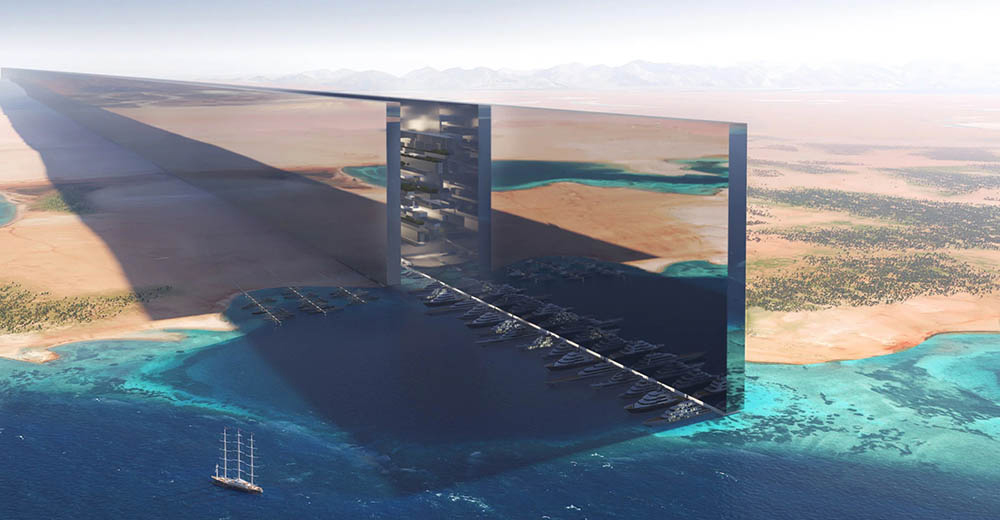

Jak mogą wyglądać największe budynki świata
The Line to wyjątkowy projekt w ramach mega-inicjatywy NEOM, który zakłada stworzenie miasta o długości 170 km, zaprojektowanego w formie liniowej. Miasto ma być umiejscowione w malowniczym otoczeniu górskim, w regionie Tabuk, w północno-zachodniej Arabii Saudyjskiej. Główne założenia projektu obejmują całkowity brak samochodów i dróg, co ma na celu ograniczenie emisji CO2 i promowanie zrównoważonego transportu. Zamiast tego mieszkańcy będą korzystać z szybkich systemów transportu, takich jak hyperloop, które umożliwią szybkie poruszanie się w obrębie miasta. Przewidziano również dostęp do przestrzeni zielonych oraz miejsca do rekreacji i spotkań społecznych. Architekci planują wykorzystanie nowoczesnych technologii do monitorowania jakości powietrza, zarządzania energią i optymalizacji codziennych działań, co sprawi, że życie w The Line będzie wygodne i ekologiczne.

Ocean Spiral to niezwykły projekt podwodnego miasta stworzony przez japońską firmę Shimizu Corporation. Głównym celem projektu jest stworzenie samowystarczalnej kolonii podwodnej, która może pomieścić do 5 tysięcy mieszkańców. Budowa ma polegać na tworzeniu spirali z wykorzystaniem materiałów przyjaznych środowisku, które będą osadzone na dnie oceanu. Ocean Spiral miałby wykorzystywać energię pozyskiwaną z fal morskich oraz systemy do uprawy roślin w warunkach podwodnych. Projekt zakłada również zastosowanie innowacyjnych technologii oczyszczania wody oraz pozyskiwania zasobów, takich jak woda słodka i minerały. Mieszkańcy będą żyć w przestrzeni pełnej światła, gdzie naturalne światło z powierzchni będzie się rozprzestrzeniać wzdłuż spiralnych ścian, tworząc unikalne, podwodne doświadczenie życia.

SkyCity to projekt, który ma na celu stworzenie największego na świecie budynku o wysokości 838 metrów, zaprojektowanego jako zrównoważone miasto w chmurach. Ma pomieścić około 30 tysięcy mieszkańców i 17 tysięcy miejsc pracy. Projekt zakłada wykorzystanie zaawansowanych technologii budowlanych, takich jak prefabrykacja i systemy zarządzania energią, a także inteligentne rozwiązania dotyczące transportu wewnętrznego. SkyCity ma również przestrzenie rekreacyjne, handlowe oraz zielone tereny, co ma zapewnić mieszkańcom komfortowe warunki życia. Architekci planują wprowadzenie rozwiązań, które będą wspierały zrównoważony rozwój i minimalizowały wpływ na środowisko.
Mars City to koncepcja kolonii na Czerwonej Planecie, która ma na celu utworzenie zrównoważonej przestrzeni życiowej dla ludzi. Projekt zakłada stworzenie wielu modułowych struktur, które będą mogły pomieścić od 10 do 100 osób, a każda z nich będzie wyposażona w systemy umożliwiające produkcję żywności oraz odzyskiwanie i oczyszczanie wody. Mars City ma być całkowicie samowystarczalne, korzystając z energii słonecznej i wiatrowej oraz wykorzystując lokalne zasoby, takie jak woda podziemna i minerały. Projekt ma na celu stworzenie warunków, które umożliwią długoterminowe życie na Marsie, uwzględniając wyzwania związane z promieniowaniem, niską grawitacją i ekstremalnymi warunkami atmosferycznymi.